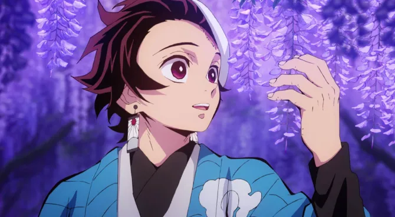
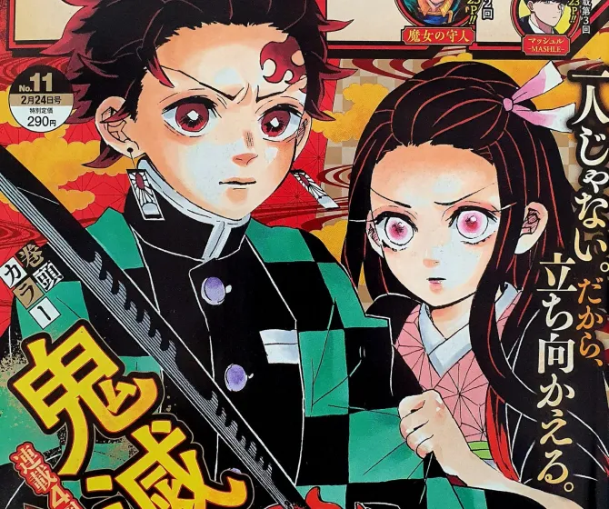

DÉMON SLAYER
Peut-on suivre le chemin de la vengeance sans perdre celui de la bonté ?

L’affiche promotionelle de la série, Démon slayer
Démon slayer est un manga iconique de notre décennie, débuter le 15 février 2016 dans le weekly shonen jump et écrit par l’autrice koyohagu gotoge il eu une très forte influence dans le marché en amenant une massive nouvelles vague de lecteur de tout bord, dû à ces ventes démentiel de 2019 à 2021 et pour dire en 2020, il a battue le record du monde de volume vendu en une seul année avec 82 345 447 copie vendu au total soit environs 43% de plus que l’ensemble des 9 autres manga les plus vendu cette année réunis.
Synopsis

Extrait de la série démon slayer présentant le protagoniste tangiro
Démon slayer se passe lors japon du XX siècle et raconte l'histoire d’un jeune garçon appelé tanjiro vivant comment vendeur de charbon pour faire vivre sa famille, un soir en rentrant d’une vente, il découvre sa famille ravagé par un démon, seul l’une de ces soeur semblent encore respirer, prenant son courage à 2 mains, il tenta de la ramener au médecin, sans savoir qu’elle était devenu une démone, en plein milieux du chemin, nezuko se mis à l'attaquer jusqu'à qu’ un épéiste nommer chasseur de démon l'arrête, cette épéiste lui trouvant un calmant pour sa soeur. Tanjiro vas alors avoir un nouveau but, redonner à sa soeur son humanité perdu.

Extrait de la série démon slayer présentant l’une des personnages principale nezuko
Est-ce accessible ?
le film est conseillé au jeunes a partir de 12 ans attention le contenu de ce livre est légèrement violent, à éviter pour les personne les plus sensibles
Conclusion
Se manga terminé en 23 volumes depuis décembre 2020, a eu un fort impact sur le marché du en partie à une adaptation en animé exceptionnelle mais aussi à une histoire touchante et entraînante, malgré sa violence soutenable, se livre permis de réunir ensemble les grand lecteur comme les néophyte, les hommes comme les femmes, les jeunes comme les anciens tous ensemble au tours d’une histoire commune, qui y’a t’il de plus merveilleux ?

extrait de la série démon slayer
Vous pouvez découvrir le premier chapitre du manga ici

Extrait de démon slayer
extrait litéraire numérique